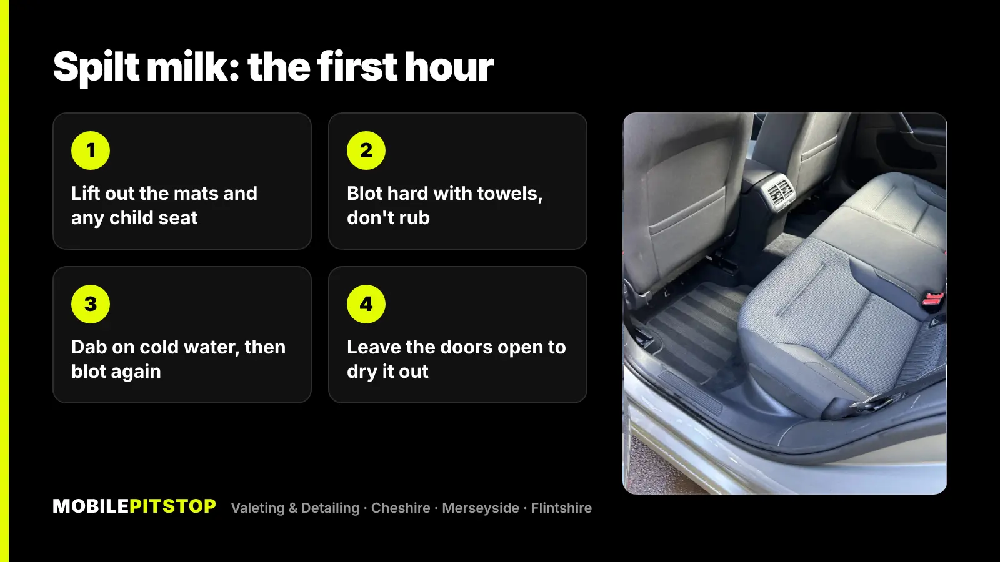
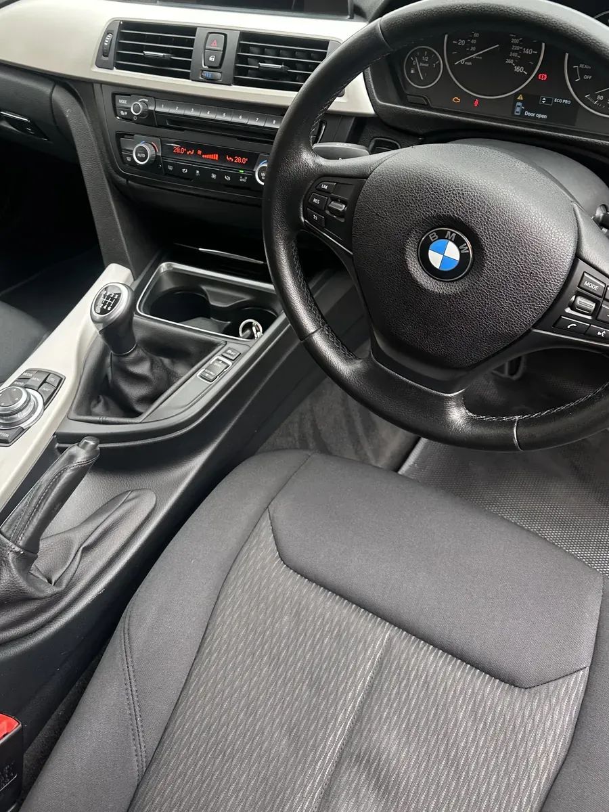
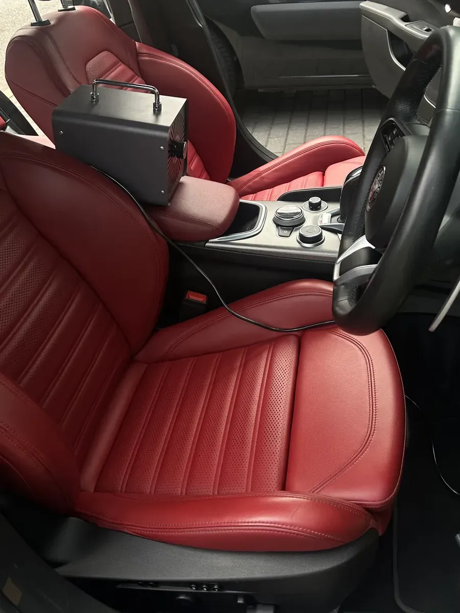

If milk has just spilled in your car, get the mats out, blot up as much as you can with towels or kitchen roll, and rinse the patch with a little cold water before blotting again. Don't rub it in, don't use hot water, and don't just spray an air freshener over it. The next hour makes a big difference to whether the car smells in a week's time.
The reason milk is worse than most spills is what happens after it dries. The milk soaks through the carpet into the foam underlay beneath, and bacteria start breaking it down. That's the sour, cheesy smell that turns up a few days later, usually on the first warm day with the windows shut.
Below is what to do straight away, how to tell if it has soaked in, what you can fix yourself, and what it takes when the smell has already set in.
Speed matters more than products here. The aim is to get liquid out of the carpet before it reaches the underlay.

If you've got a wet and dry vacuum, use it after the cold-water rinse. It pulls out far more liquid than towels can. A normal household vacuum isn't built for liquid, so don't use one on a wet patch.
On the day, a milk spill often looks dealt with. The top of the carpet dries, the mark fades, and there's no smell. Then a few days later the car smells sour.
That's because the visible part was never the problem. Car carpets sit on a thick layer of foam or felt underlay, and a carton or bottle of milk has enough volume to run straight through the carpet into it. The underlay holds the milk like a sponge, stays damp because there's no airflow under the carpet, and bacteria get to work on the milk fats and proteins. Warmth speeds that up, which is why the smell is worst when the car has been parked in the sun or the heater has been on.
Where it went matters too:
| Where the milk went | How hard it is to get out |
|---|---|
| Rubber mat or plastic trim | Easy: wipe, wash and dry |
| Carpet mat only | Usually fine: wash and dry the mat fully indoors |
| Fitted carpet, small amount | Often fixable at home if you act fast |
| Fitted carpet, a lot, or found days later | Likely in the underlay: needs extraction |
| Fabric seat | Can soak into the foam cushion, so treat it as soon as you can |
| Into seat rails, under the centre console or a child seat base | Hard to reach without taking things out |
If the spill was small, or you've caught the smell early, this is worth trying before anything else.
Then give it the real test: a couple of days later, leave the car shut on a warm afternoon and smell it when you open the door. If it's clean, you've got it.
What not to do: don't pour bleach or mix cleaning products in the car, don't flood the carpet with water, and don't hose or pressure-wash the interior. Getting the underlay wetter spreads the milk and gives you a damp, musty smell on top of the sour one.
Home cleaning works on the surface. It struggles when:
At that point air fresheners, sprays and more bicarbonate of soda just cover the smell for a while. The milk has to come out.
Our odour removal service covers spilt milk alongside smoke, pets and other biological spills. The principle is the same for all of them: remove the cause first, then treat what's left. We do it at your home or workplace.


If the milk is the main problem, odour removal is the service to book. If the rest of the interior needs work too, an Interior Deep Clean covers the whole cabin, and the In & Out Deep Clean includes steam, shampoo and extraction of the seats, carpets, mats and boot. Not sure which? Send a few photos in daylight and we'll tell you straight which service the car needs, including when a cheaper one will do.
Dealing with more than milk? We have guides on getting cigarette smell and dog hair out of a car too.